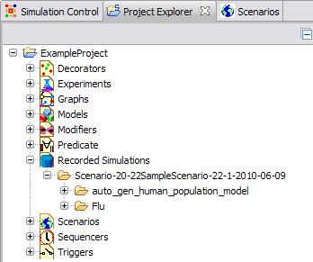
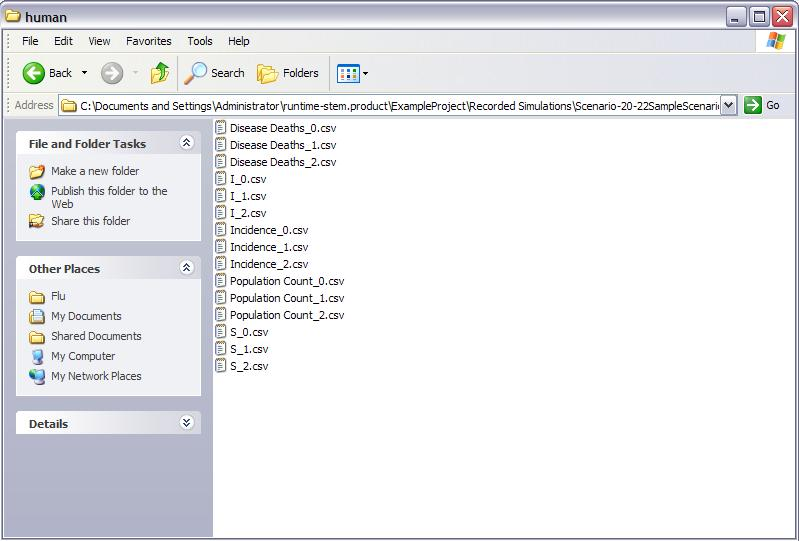

Figure 3. Enabling Logging from the CSV Logger tab
The current distribution of STEM provides users with
the ability to output Disease State Data to a comma separated variable (CSV)
file. This function is enables through a view called the CSV Logger View.
1) Loading the CSV Logger View
To load or activate the CSV Logger View, first launch (and run) stem. On the top menu (See figure 1) bar click on
>window>other...>CSV Logger
This will open a CSV
Logger Tab at the bottom of your Simulation Perspective (See figure 2).
Initially the view will be blank because there are no scenarios being
logged.
|
|
|
|
Figure 1: Opening the CSV Logger View |
Figure 2: Starting a Scenario |
2) Testing the Logger
To use the logger, you first have to activate logging from the CSV Logger tab. Click the 'On' button and the next time a scenario is started data will be logged, see figure 3.
|
|
|
Figure 3. Enabling Logging from the CSV Logger tab |
Next you pick the scenario you want to log. You can pick either your own scenario or a built in one. In the following example we use the built in scenario for the Spanish Flu in Tokyo, Japan.
Go to the Scenarios Tab in either the Simulation or Designer Perspective and expand the Tabs
->STEM->Geography->Political->Country->Japan
double click on the built in scenario
Spanish Flu, Tokyo, Japan, 2000
to start it. (See Figure 2).
Once you have started the scenario, click on the CSV Logger Tab. You will notice that the view now displays the scenario and disease being logged. You can stop logging at any time by selecting the 'Off' button in the CSV
3) Remembering User preferences
Your selections, by scenario, will be remembered the system preferences for the CSV Logger View. The STEM CSV Logger View uses Eclipse DialogSettings to automatically remember user preferences. This feature is always enabled and begins as soon as you enable any report view. The preferences that are "remembered" are the logger setting for each scenario.
... runtime-stem.product\.metadata\.plugins\org.eclipse.stem.util.loggers
where the directory \runtime-stem.product is located in the same parent directory as the users STEM eclipse workspace (for example c:\runtime-stem.product).
Preferences for the Time Series views are stored in a
file:
CSVLogger_Preferences.txt
You never need to edit this file directly. Once you
have designated a set of locations to monitor for the logger, these will always
be used for the corresponding scenario.
In Figure 4 we show the disease that has been designated for logging for the
Japan scenario.
|
|
|
Figure 4: Logging Data for a Scenario |
4) Directory Location of Logged Data
The Disease State data for every location monitored is stored in a separate Comma Separated Variable file. The data directory (Figure 5) may be found under your STEM workspace folder as subfolder of "Recorded Simulations" in your project folder. For instance, if you are logging a scenario in a project called "Vermont", the log files will be found in a subfolder under this directory:
...runtime-stem.product\Vermont\Recorded Simulations\
For built-in scenarios the log files are located under this folder:
...runtime-stem.product\BuiltInScenarios\Recorded Simulations\
It is possible to run multiple scenarios in STEM, or to simultaneously run
more than one instance of a given scenario. Logged data is stored in a folder
with the same name as the scenario just run, but this folder is place in turn
in a parent folder named by the start time of the particular scenario instance.
This way, if you run the scenario more than once (for example as a batch process
with some parameter changed from run to run) no data will be accidentally
overwritten as each scenario will have a unique time stamp.
Each scenario folder is further subdivided into subfolders, one folder for each
disease (the folder name is the disease name) that is part of the scenario
(See Figure 5).
|
 |
|
Figure 5: The location (directory) where files are stored. |
5) CSV Logged Data Files
In Figure 6 we show the particular data files written by the logger for the Spanish Flu disease. Separate CSV files (with extension .csv) are created for each disease state modeled by the disease. These are named using the ID of the state (e.g. S, E, I or R) followed by an underscore (_) followed by a number. The number indicates the resolution of the locations stored in the file. For instance, 3 means geographical administration level 3, i.e. US cities. A second file (runparameters.csv) is also generated. This will contain data about the run parameters for each disease.
|
 |
|
Figure 6: Individual Log Files. These are created for each location or node monitored. Another file contains the parameters run for the scenario in question. |
Each of the data files for monitored nodes contains comma separated data. The specific columns in the file represents the locations being logged. For example, for the Japan scenario the file S_1.csv has the columns:
iteration,time,JP-KYU,JP-KNT,JP-0,JP-CHB,JP-TAI,JP-CHG,JP-SKO,JP-HRI,JP-TOH,JP-KIN,JP-RYU
A data sample is shown in Figure 7.
| 1,Fri 10 Oct 08,560042.0,245240.45466207762,5627424.0,79564.86664536313,79332.0,110140.0 2,Sun 12 Oct 08,560042.0,232427.57523514942,5627424.0,79519.11998544677,79331.93495068772,110140.0 3,Tue 14 Oct 08,560042.0,198318.63446606975,5627424.0,77166.49459938332,79326.44576007508,110140.0,115284.0 4,Thu 16 Oct 08,560042.0,104046.9798877738,5627424.0,60049.957044064824,78761.24316196528,110140.0,115284.0 |
| Figure 7: Sample data from a CSV Log File |